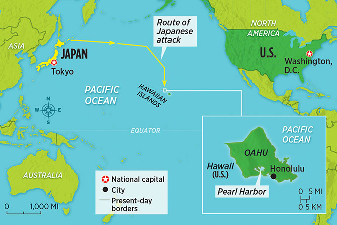

Pearl Harbor was a devastating day for the United States, to quote Franklin D. Roosevelt, “it is a day that will live in infamy.” The United States didn’t want to officially enter WWII. What pushed the US was the deadly attack on December 7th, 1941, Pearl Harbor. Pearl Harbor is a naval base located in the Pacific Ocean on the island of Hawaii in Honolulu. This was a seemingly unexpected attack as Pearl harbor is nearly 4,000 miles away from Japan.
On the morning of December 7th, at around 6 am, the first fleet of Japanese bomber planes lifted off of Japanese aircraft carriers. The first fleet was led by Mitsuo Fuchid, a Japanese pilot. When they reached the shores of Pearl Harbor, the Japanese began their nearly two hours of bombing the US base. Their main targets were repair shops and fuel reserves. Without the ability to repair damaged vehicles or fuel them, the base would have been rendered useless. To understand why the Japanese bombed Pearl Harbor, we have to look into the past.